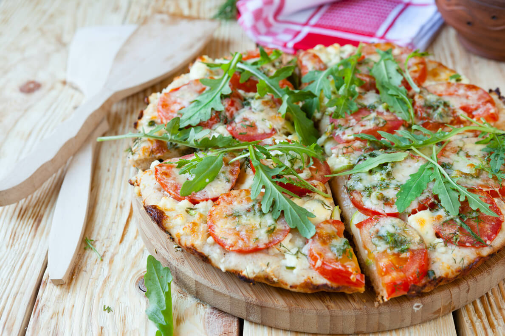

Arugula and Goat Cheese Pizza

Description
This arugula and goat cheese pizza with pesto is an amazingly simple and delicious variation to your regular tomato-based pizza. This recipe is inspired by a popular pizza restaurant in Washington DC.
Ingredients
- 1 (12 inch) unbaked pizza crust
- 6 tablespoons prepared pesto sauce
- 3 roma tomatoes, thinly sliced
- 1 (8 ounce) package seasoned goat cheese
- 2 cloves garlic, peeled and thinly sliced
- 1 cup fresh arugula
- 1 teaspoon olive oil
Steps
- Preheat the oven according to pizza package instructions.
- Dab pesto onto the center of the pizza base, and spread toward the outer edges. Cut the goat cheese into thin coins, and spread or crumble across the pizza. Arrange tomato slices over goat cheese. Sprinkle with garlic. Brush the crust edges lightly with olive oil.
- Place pizza directly on preheated oven rack. Bake for 5 to 10 minutes, or until the crust edges are golden.
- After taking pizza out of the oven, allow to cool for a few minutes so that the cheese has time to set. After a couple of minutes, cover the pizza with a few handfuls of arugula. Cut, serve, and enjoy!